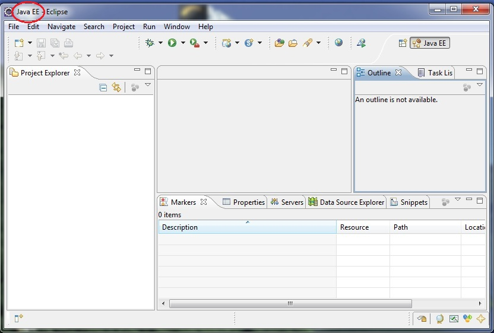
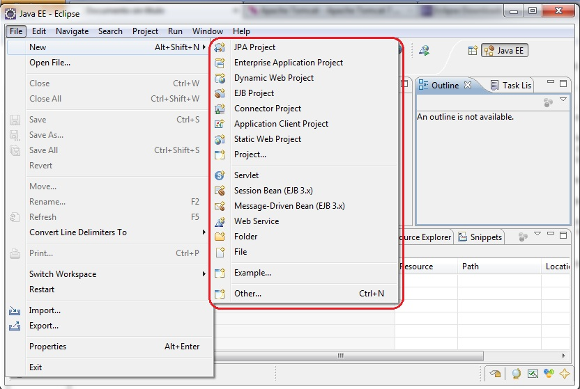
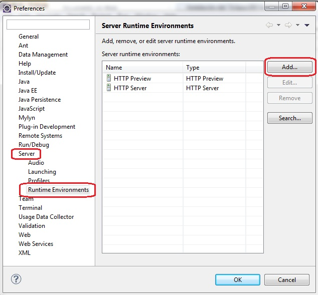
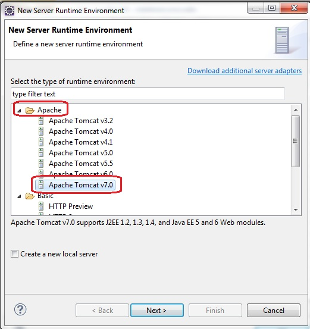
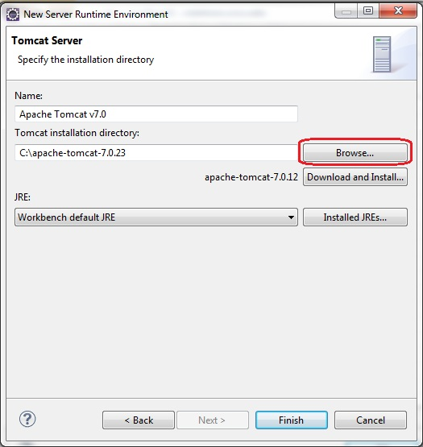
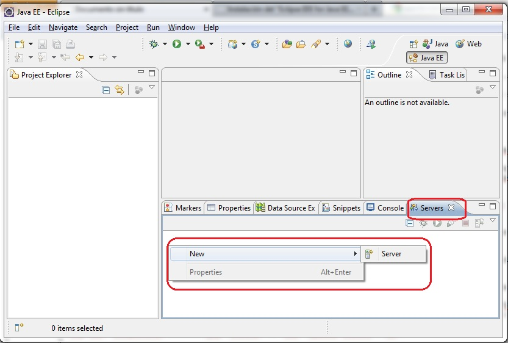
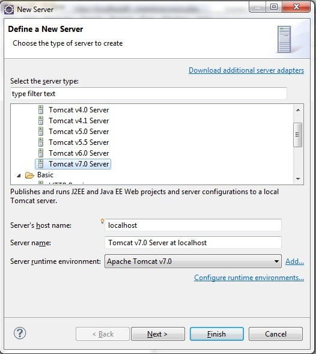

"Eclipse IDE for Java EE Developers"
Para desarrollar aplicaciones que se ejecuten en un servidor web debemos utilizar la versión de Eclipse que viene con todos los complementos que facilitan el desarrollo.
La versión que debemos descargar es Eclipse IDE for Java EE Developers, como podemos ver el tamaños es mayor que la versión que hemos utilizado hasta este momento (Eclipse IDE for Java Developers)
Podemos crear otra carpeta con otro nombre para no perder la versión de Eclipse que hemos utilizado para el desarrollo de aplicaciones de escritorio (swing)
Creemos la carpeta eclipsej2ee y dentro de la misma descomprimamos el entorno de Eclipse que acabamos de descargar "Eclipse IDE for Java EE Developers".
Cuando ejecutamos el Eclipse nos pide seleccionar la carpeta donde se almacenarán los proyectos que crearemos y aparece el siguiente entorno (como podemos ver prácticamente igual que la versión "Java Developers" con un título distinto):
Pero si ingresamos al menú de opciones File -> New veremos que nos permite crear una serie de proyectos muy distintos a la otra versión de Eclipse:
"Apache Tomcat"
Ahora pasaremos a instalar un servidor web "Apache Tomcat" que nos permitirá ejecutar servlet y páginas dinámicas.
Podemos descargar el "Apache Tomcat" de aquí (descargar el archivo Binary Distributions Core 32-bit Windows zip) y descomprimirlo en una carpeta.
Una vez descomprimido procedemos a registrarlo en Eclipse. Desde el menú de opciones seleccionamos Window -> Preferences y en el diálogo que aparece debemos seleccionar Server -> Runtimes Environments y presionar el botón "Add...":
En el nuevo diálogo que aparece seleccionamos de la carpeta "Apache" la versión 7 que es la que acabamos de descargar y descomprimir en una carpeta de nuestro disco duro:
En el último diálogo que aparece debemos seleccionar la carpeta donde hemos descomprimido el "Apache Tomcat" y presionar el botón "Finish:
Ahora debemos iniciar los servicios del servidos "Apache Tomcat" para podes hacer aplicaciones que hagan peticiones.
Para arrancar el Tomcat debemos presionar el botón derecho del mouse sobre la ventana "Server", si no parece esta ventana podemos activarla desde el menú (Window -> Show View -> Servers) y seguidamente seleccionar del menú contextual la opción New -> Server:
En este diálogo seleccionamos "Apache" Tomcat V7.0 y presionamos el botón "Finish":
Como podemos ver ya tenemos el "Tomcat" listo para poderlo utilizar en los distintos proyectos que implementaremos: